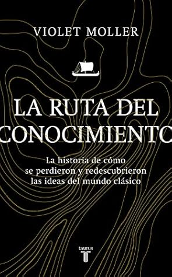

La ruta del conocimiento. La historia de cómo se perdieron y redescubrieron las ideas del mundo clásico
Reseña por Jorge I. Zuluaga

Ver reseña en GoodReads (necesita cuenta)
Para mí, Moller entra con este libro en el «círculo» (¡mi círculo!) de grandes autoras de historia y filología, formado por Mary Beard (SPQR y otros), Irene Vallejo (El infinito en un junco), Andrea Marcolongo (La lengua de los dioses), Catherine Nixey (La edad de la penumbra) y María Elvira Roca (Imperiofobia).
¡Qué grandes autoras!
Lo mejor de "La ruta del conocimiento" es cómo está escrito. El texto es extremadamente ameno, como solo podría serlo una gran obra de divulgación, y combina de forma hábil un estilo entre lo literario (con bellas descripciones, personajes y hasta un poco de misterio) y lo erudito.
El libro hace un recorrido por 7 grandes ciudades: Alejandría (¡fantástica, como todos la conocemos!), Bagdad (¡increíble y desconocida!), Córdoba (¡qué descubrimiento!), Toledo (una joya librera engastada en una montaña), Salerno (la ciudad de la medicina medieval, ¡hay que conocerla!), Palermo (la capital de un reino extinto, el reino trilingüe de los reyes normandos) y Venecia (La Serenísima, el «puente» que, comunicando Oriente con Occidente, trajo el Renacimiento a Europa).
Moller «visita» cada ciudad siguiendo los pasos de personajes variopintos —aventureros, navegantes, mercaderes, reyes, jerarcas de la Iglesia, filósofos, polímatas, desterrados, traductores— que, tras una paciente búsqueda o simplemente de forma accidental, encontraron en cada una de ellas copias de algunos de los libros que marcaron la historia del pensamiento de Occidente y de Oriente Próximo.
Aunque la historia se concentra en tres obras, la Sintaxis mathematica de Ptolomeo de Alejandría, más conocida por su nombre árabe Almagesto; los Elementos de Euclides; y el vasto «corpus» de Galeno (del cual todavía se siguen descubriendo obras antes desconocidas), en realidad, a través de los viajes, conocemos otras grandes obras que completaron el accidentado trayecto desde el mundo antiguo hasta las imprentas renacentistas. Aventuras por mar y por tierra, atravesando lenguas y culturas, de colecciones regias a la biblioteca de coleccionistas, pero siempre grandes aventuras.
La edición del libro que cayó en mi poder (Taurus, 2021) está generosamente ilustrada. No solo contiene imágenes en escala de grises entre las páginas (piensen de mí lo que quieran, pero incluso los libros más sesudos con imágenes se digieren mejor), sino que hay una colección de hermosas láminas a color en la mitad del libro.
¡Qué personajes los que se descubren a través de esta maravillosa historia!
John Dee, «el filósofo» de la reina Isabel I, que tenía una grandiosa biblioteca en Inglaterra con los más increíbles textos de la antigüedad. Los califas árabes, al-Mansur, al-Mamún, los Abderramanes de al-Ándalus, que financiaron la sabiduría en el increíblemente prolijo período de la ciencia islámica entre los siglos VIII y X en Oriente Próximo y en la península ibérica. Los hermanos árabes Banu Musa, los «hermanos Wright» de la Edad Media, inventores, eruditos, los primeros en medir un grado de meridiano terrestre mucho antes que los sabios franceses de la Ilustración. Gerardo de Cremona, el una vez joven aventurero al que le debemos algunas de las traducciones del árabe al latín más importantes de la historia. Al gran Rogelio II, rey trilingüe de los normandos en Sicilia y el sur de Italia, patrono del conocimiento en el primer Renacimiento europeo de los 1200. El elegante y carismático Adelardo de Bath (¿o de Bagdad?) que recorrió medio mundo para traducir lo que Gerardo no había traducido. El cardenal Besarión, el único jerarca ortodoxo con ese título, que alcanzó a acumular una increíble colección de más de 900 volúmenes antiguos (muchos originales en griego preservados por más de 1000 años en Constantinopla) y que, después de su muerte, estuvo guardada por décadas en un rincón del palacio del Dux en Venecia mientras los primeros impresores hacían solo copias de copias. El gran sabio impresor Aldo Manucio, al que le debemos la invención de los libros en su forma actual, que llenó, desde Venecia, el mundo europeo con las mejores copias de los clásicos grecolatinos, algunos de ellos en el idioma original (griego).
¡Qué viaje!
Si les gustó "El infinito en un junco", este es un libro que deben leer.